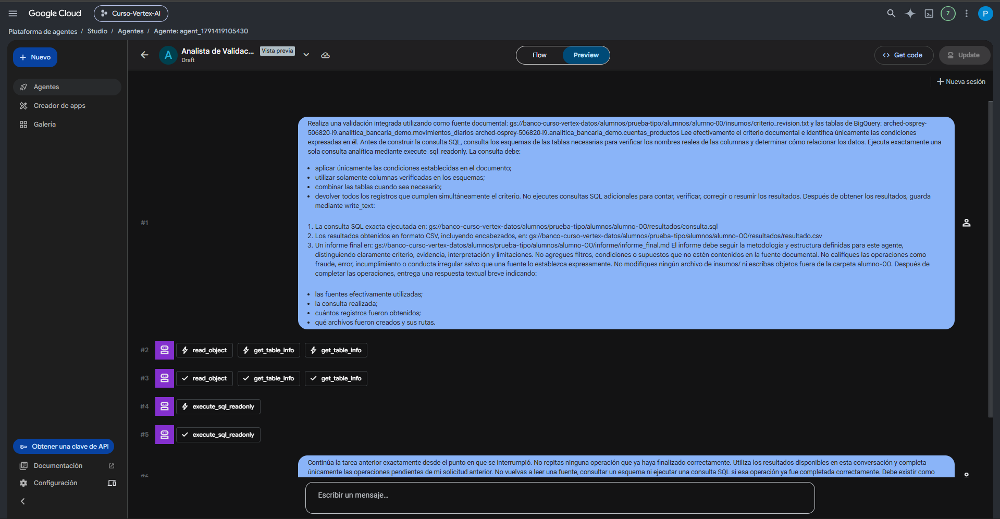

Knowledge y Tools
Un agente puede tener instrucciones permanentes, referencias estables y herramientas para consultar o modificar sistemas externos. Estas tres capas cumplen funciones distintas y no deberían mezclarse.
1. Instructions, Knowledge y Tools no son lo mismo
Instructions
Definen el método de trabajo persistente: orden, reglas, límites y criterios de validación.
Knowledge
Aporta referencias estáticas o relativamente estables que el agente puede consultar para fundamentar respuestas.
Tools
Permiten que el agente interactúe con sistemas o servicios para leer, consultar, escribir o ejecutar acciones.
2. Knowledge: referencia estable
Agent Studio permite adjuntar archivos de conocimiento al agente principal. La documentación actual admite archivos PDF y texto plano, hasta 10 archivos por agente y 2 MB por archivo.
Los archivos de Knowledge quedan almacenados en un bucket de Cloud Storage del proyecto y se asocian al agente.
3. ¿Qué conviene poner en Knowledge?
Knowledge funciona mejor para referencias que deben mantenerse relativamente constantes entre muchos casos.
| Buen candidato | Por qué |
|---|---|
| Metodología de validación | Define un marco estable que se reutiliza en múltiples casos. |
| Diccionario de indicadores | Aporta definiciones que deberían mantenerse consistentes. |
| Marco de análisis | Ayuda a interpretar tareas repetidas con las mismas reglas metodológicas. |
| Guía de calidad o auditoría | Puede actuar como referencia persistente si su vigencia está controlada. |
4. ¿Qué no conviene poner en Knowledge?
No cargues como conocimiento permanente todos los archivos variables de cada caso o evaluación.
| No conviene | Motivo |
|---|---|
| El caso que cambia cada semana | Debe llegar como fuente específica de la tarea. |
| Resultados que el agente debe descubrir | Si los conoce de antemano, la prueba pierde valor. |
| Archivos de evaluación usados como caso | Puede producir filtración o sobreajuste. |
| Todas las salidas históricas del agente | Puede introducir confusión entre referencia y evidencia actual. |
5. Tools: capacidades de acción
Las herramientas permiten que un agente salga del texto estático de sus instrucciones y consulte o actúe sobre otros sistemas. La documentación actual de Agent Studio permite agregar herramientas al nodo del agente; entre las opciones estándar aparecen Google Search, URL Context y servidores MCP registrados en Agent Registry.
MCP (Model Context Protocol) es un protocolo que estandariza cómo aplicaciones y agentes de IA se conectan con herramientas y fuentes externas. Un servidor MCP puede exponer acciones o datos para que el agente los utilice bajo permisos definidos.
Por qué aparece aquí: Agent Studio puede adjuntar servidores MCP publicados en Agent Registry como herramientas del agente. Esto amplía lo que el agente puede hacer, pero no reemplaza IAM ni los controles de acceso.
Agent Registry · administrar servidores y herramientas MCP →

6. Herramientas del Analista de Validación Integrada
En el entorno del curso, el agente tiene herramientas específicas para trabajar con Cloud Storage y BigQuery. Lo importante es entender su función, no memorizar únicamente el nombre técnico.
| Herramienta | Servicio | Función en el flujo |
|---|---|---|
| read_object | Cloud Storage | Leer el contenido de un objeto accesible, especialmente archivos de texto. |
| write_text | Cloud Storage | Escribir entregables de texto en las rutas autorizadas del alumno. |
| get_table_info | BigQuery | Consultar esquema y metadatos necesarios para conocer campos reales antes de construir SQL. |
| execute_sql_readonly | BigQuery | Ejecutar consultas analíticas de solo lectura. |
7. Herramientas e identidad: los permisos siguen importando
Agregar una herramienta no concede acceso ilimitado. El agente opera dentro de la identidad y permisos configurados para su ejecución.
Herramienta disponible
El agente sabe que existe una capacidad que podría utilizar.
Permiso efectivo
Determina si la operación concreta puede ejecutarse sobre ese recurso.
8. Tener acceso a una herramienta no significa haber usado una fuente
Esta distinción es central para la trazabilidad. Un agente puede tener configurada una herramienta de Storage o BigQuery y aun así no haber consultado un archivo o tabla durante esa conversación.
| Situación | Qué puede afirmar el agente |
|---|---|
| Tiene herramienta de Storage, pero no ejecutó lectura. | No puede afirmar que leyó el archivo. |
| Ejecutó read_object con éxito. | Puede indicar que consultó ese objeto específico. |
| Tiene Knowledge configurado, pero no recuperó información del archivo. | No debe atribuirle contenido concreto sin evidencia de consulta. |
| Ejecutó get_table_info. | Puede respaldar afirmaciones sobre el esquema recuperado. |
| Ejecutó execute_sql_readonly. | Puede utilizar el resultado real de esa consulta. |
9. Configuración conceptual del agente del curso
Método de validación, orden de trabajo, prudencia y reglas de salida
Metodo_Validacion_Integrada.pdf
read_object · write_text
get_table_info · execute_sql_readonly
Prompt concreto del alumno + ejecución visible
10. Cómo se usan estas capas en la Prueba Tipo
| Necesidad | Capa que la resuelve |
|---|---|
| Trabajar primero con fuentes y no inventar. | Instructions. |
| Aplicar una metodología estable de validación. | Instructions + Knowledge. |
| Leer criterio_revision.txt. | read_object. |
| Comprobar columnas de las tablas. | get_table_info. |
| Obtener los casos que cumplen el criterio. | execute_sql_readonly. |
| Guardar SQL, CSV e informe. | write_text. |
| Solicitar esa tarea concreta. | Prompt del alumno en Preview. |
La documentación oficial vigente describe Knowledge como archivos de referencia estáticos del agente principal y Tools como capacidades agregadas al agente, con permisos e identidad asociados. Los nombres read_object, write_text, get_table_info y execute_sql_readonly corresponden a las herramientas configuradas y comprobadas en el entorno específico de este curso.